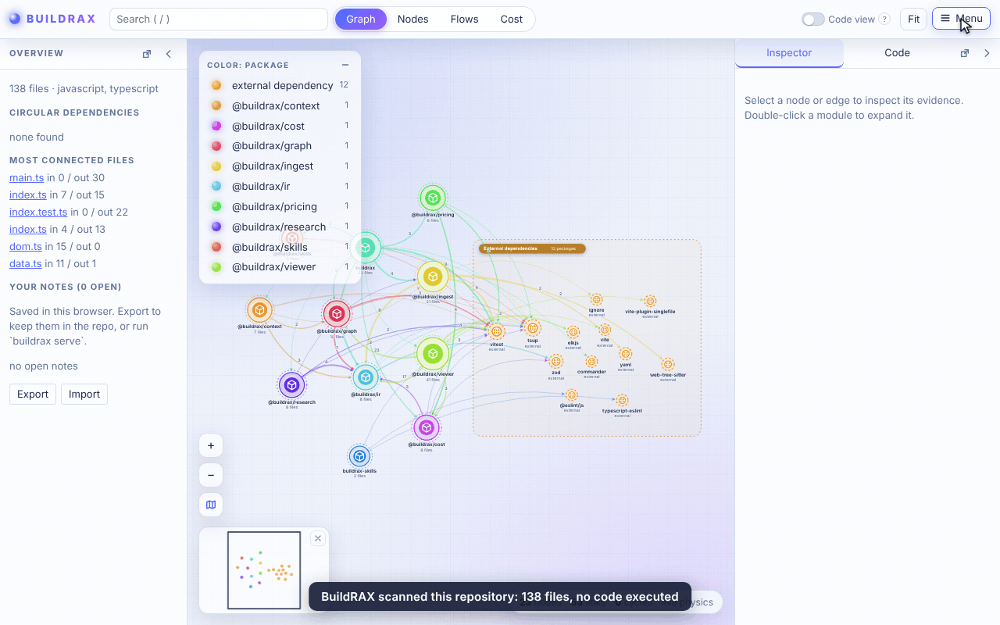

Know what breaks before you change it.
BuildRAX turns any codebase into a clickable map, so you and your AI agent can change it with confidence.
- ✓See your whole system in seconds
- ✓Find everything a change will break
- ✓Give your AI agent the map, not the whole repo
Your whole codebase,
one screen.
Open the map, click anything, and get answers: what uses it, what breaks if it changes, where each request goes, and what it will cost to run.

loading clip…Code grows faster than anyone's picture of it.
Inherited code, AI-generated code and fast side projects end up in the same place: nobody can say what depends on what. Each question below has a command or a view that answers it.
Click a file.
See what breaks.
This graph is redrawn from a real scan of fixtures/sample-monorepo. Pick
any box to see what depends on it, or switch to see what it uses. The red pair is a
real circular import that the scan found.
buildrax trace <file>
Your agent reads a map, not your whole repo.
The same scan powers an agent skill. The agent gets a bounded summary in which every fact cites a source line. The same repository always produces the same output, and your private notes are never included.
Tokens are estimated (characters ÷ 4) on this repository's 138 source files. They are not billing figures, and your numbers will differ.
Real CLI output on fixtures/sample-monorepo, trimmed for width.
Built for whoever holds the repo.
Each story is something you can do today, with the exact command that does it.
Architecture that can't quietly erode.
CI rebuilds the map on every push. Each pull request gets a plain-language architecture diff, and you can make a new circular dependency fail the build.
The diff below is real buildrax diff --markdown output from adding two
files that import each other.
origin/main
origin/main
| Before | After | |
|---|---|---|
| Nodes | 24 | 26 |
| Links | 16 | 18 |
file:packages/api/src/a.ts ↔ file:packages/api/src/b.ts
Local. Static. Cited.
It never runs your code, never calls an LLM while scanning, and never uploads your source. Estimates are labelled as estimates, and prices are never invented.
Local by default
The scan, viewer, digest, trace, routes, diff and cost commands make no network requests.
- Online lookups are opt-in, and you see what will be sent first
- Only public package names go to allowlisted hosts
Static and deterministic
Tree-sitter parses your files, and manifests are read as data. The same repo always gives the same IDs and the same digest.
- Full scan: about 1.5 s · rescan: about 0.1 s (measured on this repo)
- Unchanged files are served from a cache
Evidence on every edge
Every link is marked as verified, config, inferred or unresolved, so a guess is never shown as a fact.
- A real
.envis never opened, and secrets are masked - Your notes stay local and never reach an agent
Three steps.
About a minute.
You need Node.js 22 or newer and pnpm. BuildRAX is not on npm yet, so you install it from source.
Install
git clone https://github.com/chetanya1998/BuildRax-Skills.git && cd
BuildRax-Skills && pnpm install && pnpm build
alias buildrax="node $PWD/packages/cli/dist/bin.js"
Scan
buildrax scan path/to/your-repo
The scan is static, local and deterministic. It writes
.buildrax/model.json.
Explore
buildrax view path/to/your-repo --open
This opens one offline HTML file. Add --no-source before you share it.